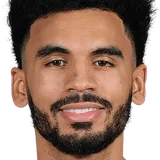

Played 3 seasons for 2 teams; his teams went 12–8 in his games.
Jump to: Record by opponent · Season by season · Teammate help
Compare Naz Long with…
Final NBA finish, season by season
Title Finals Other playoffs Missed playoffs. #1 = champion; the dashed line is last place that season. Each point opens that season's final standings.
All 30 teams ranked in 2017-18, his best finish (#7)Teammate help
 Rudy Gobert6.01 season
Rudy Gobert6.01 season Domantas Sabonis1.01 season
Domantas Sabonis1.01 season Donovan Mitchell0.21 season
Donovan Mitchell0.21 season
Career
Career records (W–L, W − L, with and without) include 2026-27 games through Nov. 22, 2026; season counts and finishes are through 2025-26. Each card opens its board in the same scope. How we count.

Latest completed seasons
Season by season
Newest first; every header sorts. Final NBA finish is the team's rank among all teams that season (#1 = champion) and opens that season's standings. "Without him" uses the team-season window; the span line counts only the games between his first and last game for the team.
| 2019-20 | #9 of 30 | 45–28 61.6% | Lost 1st round 0–4 | 5 of 73 | 3–2 60.0% | 42–26 61.8%span: 36–22, gap −2.1 | −1.8 | |
| 2018-19 | #9 of 30 | 50–32 61.0% | Lost 1st round 1–4 | 14 of 82 | 9–5 64.3% | 41–27 60.3%span: 37–22, gap +1.6 | +4.0 | |
| 2017-18 | #7 of 30 | 48–34 58.5% | Lost conf semis 1–4 | 1 of 82 | 0–1 0.0% | 48–33 59.3%span: N/A, gap N/A | −59.3 |
On/off, starts and close games
From the lineup data, 1996-97 on. On/off is net points per 100 possessions with him on the floor minus off, a different unit from the win-rate gaps. Started and off the bench are team records in those games; close games are those within 5 points in the last 5 minutes with him on the floor.
Teammate help by season
Two separate numbers per season, each with every teammate that adds to it. Help this season = Teammates Score points for honors won that season by teammates who shared a game with him. Help coming in = the same teammates' honors from the season before. How help works.
- 2019-20
 Indiana
Domantas Sabonis All-Star13 g
Indiana
Domantas Sabonis All-Star13 g
Help this season: 1 = 1 Domantas Sabonis
More: help coming in and other teammates
Help coming in (teammates' honors the season before): 1 = 1 Victor Oladipo
Other teammates (no honors that season): Justin Holiday 5 g, Alize Johnson 5 g, Aaron Holiday 5 g, TJ Leaf 5 g, JaKarr Sampson 4 g, TJ Warren 4 g, Doug McDermott 4 g, Goga Bitadze 4 g, Brian Bowen 4 g, TJ McConnell 3 g, Malcolm Brogdon 3 g, Myles Turner 3 g, Victor Oladipo 1 g, Edmond Sumner 1 g
- 2018-19
 Utah
Rudy Gobert DPOYAll-NBA 3rdAll-Def 1st613 g
Utah
Rudy Gobert DPOYAll-NBA 3rdAll-Def 1st613 g
Help this season: 6 = 6 Rudy Gobert
More: help coming in and other teammates
Help coming in (teammates' honors the season before): 4.25 = 4 Rudy Gobert + 0.25 Donovan Mitchell
Other teammates (no honors that season): Joe Ingles 14 g, Georges Niang 14 g, Royce O'Neale 14 g, Jae Crowder 13 g, Ekpe Udoh 12 g, Derrick Favors 12 g, Donovan Mitchell 12 g, Kyle Korver 10 g, Grayson Allen 10 g, Tyler Cavanaugh 10 g, Ricky Rubio 8 g, Thabo Sefolosha 6 g, Raul Neto 3 g, Tony Bradley 3 g and 2 more
- 2017-18Utah
Donovan Mitchell All-Rookie 1st0.251 g
Help this season: 0.25 = 0.25 Donovan Mitchell
More: help coming in and other teammates
Help coming in (teammates' honors the season before): 0
Other teammates (no honors that season): Joe Johnson 1 g, Joe Ingles 1 g, Rodney Hood 1 g, Alec Burks 1 g, Ekpe Udoh 1 g, Derrick Favors 1 g, Jonas Jerebko 1 g, Ricky Rubio 1 g, Royce O'Neale 1 g
Record against each opponent
Regular season, through 2025-26 (2026-27 games not included): 20 games, 12–8, against 17 franchises.
Grouped by franchise (named as today); game lists keep each team's name that season. Filters and the tab are kept in the URL, so a filtered view can be shared.
| Games list | |||||||
|---|---|---|---|---|---|---|---|
| 2 | 1–1 | 50.0% | 0 | N/A | 2017-18 to 2018-19 | ||
| 2 | 1–1 | 50.0% | 0 | N/A | 2018-19 | ||
| 2 | 0–2 | 0.0% | −2 | N/A | 2018-19 to 2019-20 | ||
| 1 | 1–0 | 100.0% | +1 | N/A | 2018-19 | ||
| 1 | 1–0 | 100.0% | +1 | N/A | 2019-20 | ||
| 1 | 1–0 | 100.0% | +1 | N/A | 2018-19 | ||
| 1 | 1–0 | 100.0% | +1 | N/A | 2018-19 | ||
| 1 | 0–1 | 0.0% | −1 | N/A | 2018-19 | ||
| 1 | 1–0 | 100.0% | +1 | N/A | 2018-19 | ||
| 1 | 1–0 | 100.0% | +1 | N/A | 2019-20 | ||
| 1 | 1–0 | 100.0% | +1 | N/A | 2018-19 | ||
| 1 | 1–0 | 100.0% | +1 | N/A | 2018-19 | ||
| 1 | 1–0 | 100.0% | +1 | N/A | 2019-20 | ||
| 1 | 0–1 | 0.0% | −1 | N/A | 2019-20 | ||
| 1 | 0–1 | 0.0% | −1 | N/A | 2018-19 | ||
| 1 | 1–0 | 100.0% | +1 | N/A | 2018-19 | ||
| 1 | 0–1 | 0.0% | −1 | N/A | 2018-19 |
Rows add up to his career record in his games. A playoff series counts when he played in it; early round-robin games show as games only. How we count.
Arrival and departure
Team wins per 82 games the season before he arrived vs his first season there, and his last season vs the season after he left. He leaves a team only when his next season with games is for another team (or he never plays again); whole seasons he missed and came back from are one "Missed" row with the team's record without him. Per 82 so short seasons compare fairly. These are team records, not a measure of what he did.
| Left | after 2019-20 | 2019-20: 45–28 50.5 per 82 | 2020-21: 34–38 38.7 per 82 without him | −11.8 wins | |
| Arrived | 2019-20 | 2018-19: 48–34 48.0 per 82 | 2019-20: 45–28 50.5 per 82 | +2.5 wins | |
| Left | after 2018-19 | 2018-19: 50–32 50.0 per 82 | 2019-20: 44–28 50.1 per 82 without him | +0.1 wins | |
| Debut | 2017-18 | 2016-17: 51–31 51.0 per 82 | 2017-18: 48–34 48.0 per 82 | −3.0 wins |
With and without his teammates
His 12 teammates with the most regular-season games together. "Together" is the team's record in the games both played for it; "Without him" is the team's record in the games Naz Long played for that team while the teammate was on it (between the teammate's first and last game for the team, the appearance span) and the teammate did not play. Fewer than 20 games without him: no gap. Games through Nov. 22, 2026. How we count.
 Royce O'NealeUtah 2017-18 to 2018-19
Royce O'NealeUtah 2017-18 to 2018-19- Together
- 9–6 60.0%
- Without him
- N/A N/A
- Gap
- Too few games without him
 Joe InglesUtah 2017-18 to 2018-19
Joe InglesUtah 2017-18 to 2018-19- Together
- 9–6 60.0%
- Without him
- N/A N/A
- Gap
- Too few games without him
 Georges NiangUtah 2018-19
Georges NiangUtah 2018-19- Together
- 9–5 64.3%
- Without him
- N/A N/A
- Gap
- Too few games without him
- Donovan MitchellUtah 2017-18 to 2018-19
- Together
- 9–4 69.2%
- Without him
- 0–1 0.0%
- Gap
- Too few games without him
- Rudy GobertUtah 2018-19
- Together
- 9–4 69.2%
- Without him
- 0–1 0.0%
- Gap
- Too few games without him
 Derrick FavorsUtah 2017-18 to 2018-19
Derrick FavorsUtah 2017-18 to 2018-19- Together
- 8–5 61.5%
- Without him
- 1–0 100.0%
- Gap
- Too few games without him

- Together
- 8–5 61.5%
- Without him
- 1–1 50.0%
- Gap
- Too few games without him
 Jae CrowderUtah 2018-19
Jae CrowderUtah 2018-19- Together
- 8–5 61.5%
- Without him
- 1–0 100.0%
- Gap
- Too few games without him
 Kyle KorverUtah 2018-19
Kyle KorverUtah 2018-19- Together
- 7–3 70.0%
- Without him
- N/A N/A
- Gap
- Too few games without him
- Tyler CavanaughUtah 2018-19
- Together
- 6–4 60.0%
- Without him
- 2–0 100.0%
- Gap
- Too few games without him
 Grayson AllenUtah 2018-19
Grayson AllenUtah 2018-19- Together
- 6–4 60.0%
- Without him
- 3–1 75.0%
- Gap
- Too few games without him
 Ricky RubioUtah 2017-18 to 2018-19
Ricky RubioUtah 2017-18 to 2018-19- Together
- 4–5 44.4%
- Without him
- 4–0 100.0%
- Gap
- Too few games without him